BIOLOGY - IX
y Gender Justice and Sex y A Healthy Pregnancy y Foetal Growth y Antenatal Care 113
y Motherhood y Importance of Breast Milk y Vaccination y Sexually Transmitted Infections

BIOLOGY - IX
y Gender Justice and Sex y A Healthy Pregnancy y Foetal Growth y Antenatal Care 113
y Motherhood y Importance of Breast Milk y Vaccination y Sexually Transmitted Infections

BIOLOGY - IX
l a n r te a M t s e w o L e th Kerala has ate and Child Mortality R
l and in terms of materna ad le e th n ke ta n ai d Kerala has once ag lowest maternal an e th ed rd co re s state ha child health. The te in the country. child mortality ra
Haven't you noticed the news? What can be the reasons for the decrease in the maternal and infant mortality rate in Kerala? • High literacy rate of women • Best Maternal and Child Health Care Centers • High quality public health projects • …………………………………………. Access to proper nutrition, education and health care reduce maternal and infant mortality rate. The service of health experts is essential for the health of woman and child during pregnancy and postpartum.
The physical and social well-being of girls ensure the safety of future generations. Therefore, good quality health care service is the right of women. Prepare and exhibit posters based on this idea.
114

Is there any obstacle for women in getting respect and care all over the world? Analyse the extract given below and comment.
Although the human society has attained progress in several parts of the world, there is a situation that denies accessibility to adequate education for girls. They are forced to give up their studies at an early stage and are confined to marriage, child care and raising their families. There still exists a situation in which girls are forced to engage in cooking and in household chores while boys play and go to school. It is not uncommon to be denied the right to go to work or to choose a career. Women often face restrictions not only in social relationships and economic independence, but also in personal decision making.
Shouldn’t society undergo further changes to ensure equality for women? This is where the concept of gender justice becomes relevant. What all can be done to ensure gender justice? Based on the hints given below discuss and summarise the ideas and prepare a note. Equal opportunities in leadership, decision making and positions Opportunity to travel anywhere at any time with freedom and security Equal right to education for boys and girls Equal wages for equal work Shared responsibilities for men and women in family care and household chores 115
BIOLOGY - IX


BIOLOGY - IX
Sex and Gender The sex of an individual is usually identified at birth. Choromosomes, hormones and many external and internal physical characteristics are the basis for the biological differentiation of male and female sex. The category Intersex includes those who are born with reproductive organs that are neither fully female nor male, or a combination of both or with chromosomes having variations. About forty intersex types have been identified Transgender is a general term used to denote individuals who identify themselves as non-conforming to their sex at birth and wish to live according to the gender identity in which one is convinced of. Society prescribes or imposes on men and women different characteristics of conduct and behaviour as well as responsibilities and duties, regardless of the individual's skills or peculiarities. Gender is shaped by prescriptions such as 'Boys shouldn’t cry' and 'Girls should not do certain jobs'. This often becomes discrimination based on gender, which are against human rights. People who are conscious of gender justice shape a just society that ensures equal rights, opportunities and dignity. Children acquire awareness on gender justice, discriminative power and social interactions during their adolescence. Adolescence is an important phase in every child’s life as the knowledge and awareness they acquire during this phase is shaping them into better social beings. So, it is very important for children to get proper adolescent education. What is your response to the extract of an article given below? 116

BIOLOGY - IX
Physical changes and sexual development in teenagers can make them curious and anxious. Unscientific information from various sources, including social media, can be taken to be true and that may lead to risky behavioural patterns. Adolescence should be a stage to discern undesirable gestures like gaze, touch and physical temptation directed towards them. It is also a stage to develop courage and capacity to say ‘No’ to what is wrong. In any situation the demeanour should be in such a way that words and actions should be restricted according to social norms and the freedom and dignity of others are to be valued and respected. The information gained through various means needs to be carefully evaluated before putting into practice. Help from parents, teachers, health workers and school counsellors can be sought, if one is not capable of doing it by oneself.
Isn't adolescence an important phase in a child’s life. Many changes occur in the body during this phase. Haven’t you understood these changes? What are the main changes and their causes? List them. • • Puberty is attained when semen production begins in boys and menstruation in girls. During this stage, the body undergoes certain unique changes.
117


BIOLOGY - IX
With puberty, the growth and development of male reproductive organs accelerate. Semen production begins. Erection of penis occurs as the blood flow to it increases. At this stage, ejaculation may occur during sleep at night. Such natural physical changes are signs of growth. Each person attains puberty at a different pace and speed. Haven’t you understood the major changes in girls such as ovulation and menstruation? Based on the indicators, analyse the given illustration 5.1 and, its description and formulate inferences.
Genital infections are more likely to occur during puberty. To prevent this, special care should be taken to wash these parts with mild soap solution. Moisture can lead to fungal infections. So, it is essential to keep the genital area without moisture. Wearing dry, cotton undergarments facilitating air circulation and changing them daily will help to keep the genital area dry and decrease bacterial and fungal growth.
Illustration 5.1 : Ovulation and changes in the uterine wall • The change in uterus during the menstrual cycle • Menstrual hygiene Fertilisation may possible in each menstrual cycle. Through sexual intercourse fertilisation takes place and the zygote is formed. From conception to parturition the body undergoes many changes. This is initiated by the process of fertilisation. Based on the indicators, analyse the given description and understand the process of fertilisation. 118


BIOLOGY - IX
Fertilisation The semen deposited by the penis into the vagina during sexual intercourse contains approximately 400 million sperms. From the vagina they move to the uterus through the cervix. Sperms move with the help of their tails at a speed of about 1.5 millimeter per minute. But only about one hundred of these sperms enter the oviducts (Fallopian tube). Others get disintegrated.
An egg can survive up to 72 hours after ovulation. Sperms remain in the female body only for 48 hours. But, the sperm can fuse with the ovum only for 36 hours.
Haven’t you understood that the zygote is formed in the oviduct by the fusion of a sperm with an egg? Fertilisation is more possible during the days from 10th - 17th of the menstrual cycle. • The ways by which sperms reach the oviduct • The part where the fertilisation takes place • Formation of zygote Isn’t the zygote a single cell? How does it become a multicellular baby?
119
f the Only one o t sperms tha reaches the ovum fuses y? with it. Wh Find it out.


BIOLOGY - IX
What are the changes that happen to the zygote? Based on the indicators, analyse illustration 5.2 and the description and, find answer to the child’s doubt. Repeated cell division and embryo development Morula
Zygote
Blastocyst
Fallopian tube Sperm
Ovary
Fertilisation Endometrium Implantation Blastocyst grows attached to a lining called endometrium
Ovum Ovulation
Illustration 5.2 : Growth of the Zygote
Development of an Embryo Following fertilisation, the zygote undergoes cell division. A cluster of cells called morula (16-32 cells) is formed within 3-4 days. Morula develops into a fluid filled blastocyst from 5 to 6 days. The blastocyst attaches to the inner lining of the uterus called endometrium and begins to grow. This process is called Implantation. Pregnancy begins with this. The blastocyst becomes an embryo and develops into a foetus through growth and differentiation.
• Morula, Blastocyst • Implantation Prepare a flowchart including the various steps from fertilisation to implantation. 120


BIOLOGY - IX
How does the foetus get nutrients and how is waste removed from its body?
Haven't you noticed the child’s doubt? Analyse illustration 5.3 and find an answer to the doubt.
Placenta
Umbilical cord
A temporary structure formed after the blastocyst adheres to the uterine wall - It is formed by embryonic and uterine tissues
Formed from the placenta - Oxygen and nutrients reach the body of the foetus and wastes are removed through this cord
Amnion
Amniotic fluid Found within the membrane called amnion - Prevents dehydration of the foetus and protects it from external shock
The membrane formed from embryonic cells during the early stages of development
Illustration 5.3 : Nutrition and protection of the Foetus • Placenta - formation, function • Amniotic fluid, function
121
s the Doe inate s ur foetu fecate? de and out. Find


BIOLOGY - IX
The duration from conception till the birth of the baby is called gestation period. In humans it ranges from 270-280 days. Based on indicators, analyse the illustration 5.4 indicating the development of the foetus. Discuss and develop an understanding.
Development of the foetus
1 - 3 months First trimester
4 - 6 months Second trimester
7 - 9 months Third trimester
• The heart beat begins
• Growth of hair on the head and the body.
• Lungs attain complete growth
• Formation of limbs fingers and toes
• Movement of the foetus
• The body size increases
• Sex organs and organ systems are formed
• Eyelids open, eyelashes are formed
• Gaining of body weight
Illustration 5.4 : Development of foetus
• The progressive development of the foetus • Position of the foetus
122


BIOLOGY - IX
HCG hormone
The placental cells produce a hormone called Human Chorionic Gonadotropin (HCG). During the first weeks of pregnancy, the level of this hormone increases rapidly in the body. This hormone maintains the inner lining of the uterus and stimulates the production of the hormones progesterone. Presence of HCG in the urine or blood can confirm pregnancy. This test can be done even at home with the help of the pregnancy testing kit. The mother’s body undergoes many changes for the healthy development of the foetus. These changes are due to the action of the hormones produced during pregnancy. Note the changes that occur in the body during pregnancy. What are the other changes that occur? Find out.
Amma Manassu Counselling services to resolve mental conflicts associated with pregnancy and child birth
• Gains body weight • The thickness of the inner lining of the uterus increases. • Menstruation stops temporarily. • • Along with this, mood swings, emotional instability and anxiety may also occur during this time. Most of these changes are reversible after parturition.
Antenatal care During pregnancy, women may experience nausea, vomiting, fatigue, gestational diabetes, high blood pressure and depression. Emotional support from dear ones can help to reduce all of these. Family members and health workers should ensure that the pregnant woman takes a balanced diet, gets enough rest and attends regular antenatal check up. 123
Lets make a call...

BIOLOGY - IX
Medical Termination of Pregnancy Medical Termination of Pregnancy (MTP) refers to legal abortion. It is the process of medically terminating the foetus before the completion of the pregnancy period. Foetus is terminated under the guidance of health professionals using drugs or surgical techniques taking into account; factors such as age, complexities of pragnancy and the health conditions of the pregnant woman. MTP should be done only under safe and legally accepted procedures.
What are the various factors that influence the physical and mental health of a pregnant woman? Discuss andprepare a note. What all things have to be taken care of, to ensure the physical and mental health during pregnancy? Expand the list. • A healthy diet • ……………………………… • ……………………………… • ……………………………… How important is the diet during pregnancy for the growing foetus? Observe the cartoon and record your opinion.
A baby is growing in your womb. From now, dear you should eat food for two.
............................................................................................... ............................................................................................... 124

Analyse the given description and check the validity of your opinion.
BIOLOGY - IX
Iron, folic acid, calcium and vitamin D are essential for pregnant women. For this, vegetables, fruits, leafy vegetables, grains, fish, meat, egg, milk and milk products should be included in the diet. Along with this, drinking adequate amount of water is a must. Fibre rich food helps digestion and prevents constipation. It is important to include in the diet, food items that provide protein needed for the development of the foetus and carbohydrates and fats needed for the energy required for the mother. Excessive consumption of food containing salt, sugar and fat should be controlled.
Nutritional quality of the food is more important than its quantity. Discuss with adults, the food items to be included in the diet of a pregnant woman, and those to be regulated. Now, complete the table 5.1.
Food items to be included
Food items to be regulated
...................................................
...................................................
...................................................
...................................................
...................................................
...................................................
Table 5.1: Food items to be included and regulated during pregnancy 125

BIOLOGY - IX
SAY NO TO
Bad habits affecting reproductive health Alcoholism, use of drugs and smoking can cause hormonal imbalance, irregular menstruation and ovulation disorders in women. In men, this can lead to decreased sperm efficiency and motility. Smoking, alcoholism and drug abuse during pregnancy can cause developmental disorders in the foetus, ectopic pregnancy and miscarriage. In short, substance abuse affects fertility and reproductive health. So, these habits should be avoided. Organise a seminar in the class based on the topic ‘The challenges posed by alcohol, drugs and smoking’. Sub topics • Reproductive health • Other health issues • Social and economic issues
Routine check-up and vaccination play a major role in antenatal care by diagnosing, treating and preventing health issues during pregnancy. Discuss the given facts based on the indicators and present the findings. 126

BIOLOGY - IX
Physical Examination
Blood and Urine Tests
Check blood pressure, weight, height and physical condition of the pregnant woman. After the first three weeks, a pregnant woman should gain a weight of 2 kg every month, and so, body weight should be checked at regular intervals.
Check the blood group, haemoglobin in blood, Glucose and TSH (Thyroid Stimulating Hormone) levels. Test Urinary Tract Infection, HIV infection, Anaemia, Gestational Diabetes and Malaria. After seven months, a urine albumin test is done to check high blood pressure (preeclampsia).
Ultrasound Scans Assess the position of placenta, growth of the foetus, genetic abnormalities and the presence of more than one embryo. An ultrasound scan is usually done between 8-14 weeks.
Vaccinations Certain vaccines are given to protect the mother and foetus from various types of infection. e.g. TT, Rubella vaccine
To identify genetic disorders
Chorionic Villus Sampling
Specific examinations (scanning and blood test) performed between 11-13 weeks of pregnancy can detect genetic abnormalities of the foetus. It checks the possibility of a genetic disorder called Down Syndrome. If there is a possibility of disease, then tests such as chorionic villus sampling and amniocentesis will be done.
This test detects chromosomal abnormalities by taking tissue samples from the villi of placenta within 10-12 weeks of gestation.
Amniocentesis Foetal cells are found in the amniotic fluid surrounding the foetus. In certain specifc situations it is possible to determine the genetic abnormalities and nervous disorders of the child by examining cells in this fluid.
• Importance of physical examination and blood-urine tests • Importance of scanning • Vaccination • Use of amniocentesis 127

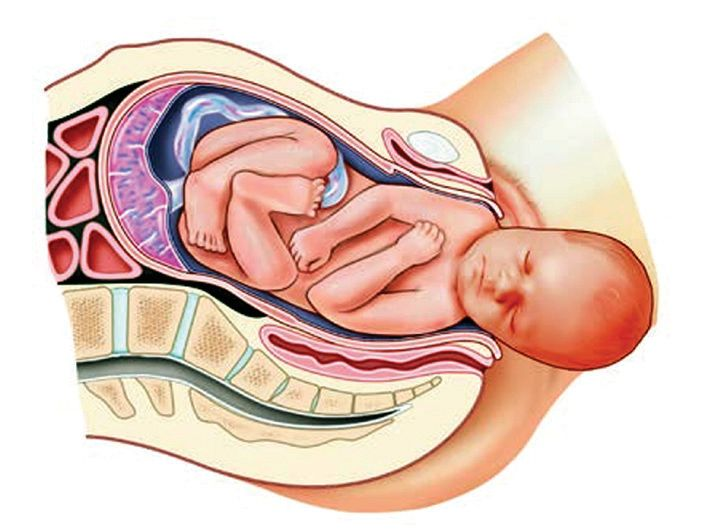
BIOLOGY - IX
Pregnancy Counselling The government ensures the services of community health officers to ensure the physical and mental health of pregnant women. Counselling systems of the government can be used to get necessary guidelines to identify health issues during pregnancy at an early stage and solve them accordingly. Pregnancy counselling helps in getting proper guidance on the diet to be followed during pregnancy, a healthy home environment, family planning and importance of breast feeding. The service of Family Health centre Field Staff, JPHN (Junior Public Health Nurse), ASHA workers, MLSP (Mid Level Service Provider), Public Health Nurse and Anganwadi staff can be availed in antenatal health care programmes.
Parturition It is a natural process that marks the end of pregnancy and the beginning of a new life outside the womb. Analyse the illustration 5.6, description and gain more understanding. Cervix Vagina
Illustration 5.6 : Parturition
Normal delivery is the process of expelling the foetus through the vagina following strong contractions of the uterine wall. When the baby’s head is positioned to face the vaginal opening, the uterus contracts and the cervix dilates to push the baby out. Caesarean (C-section) is the surgical removal of the baby when normal delivery is not possible, or if there is a risk to the health of the mother or the baby.
128

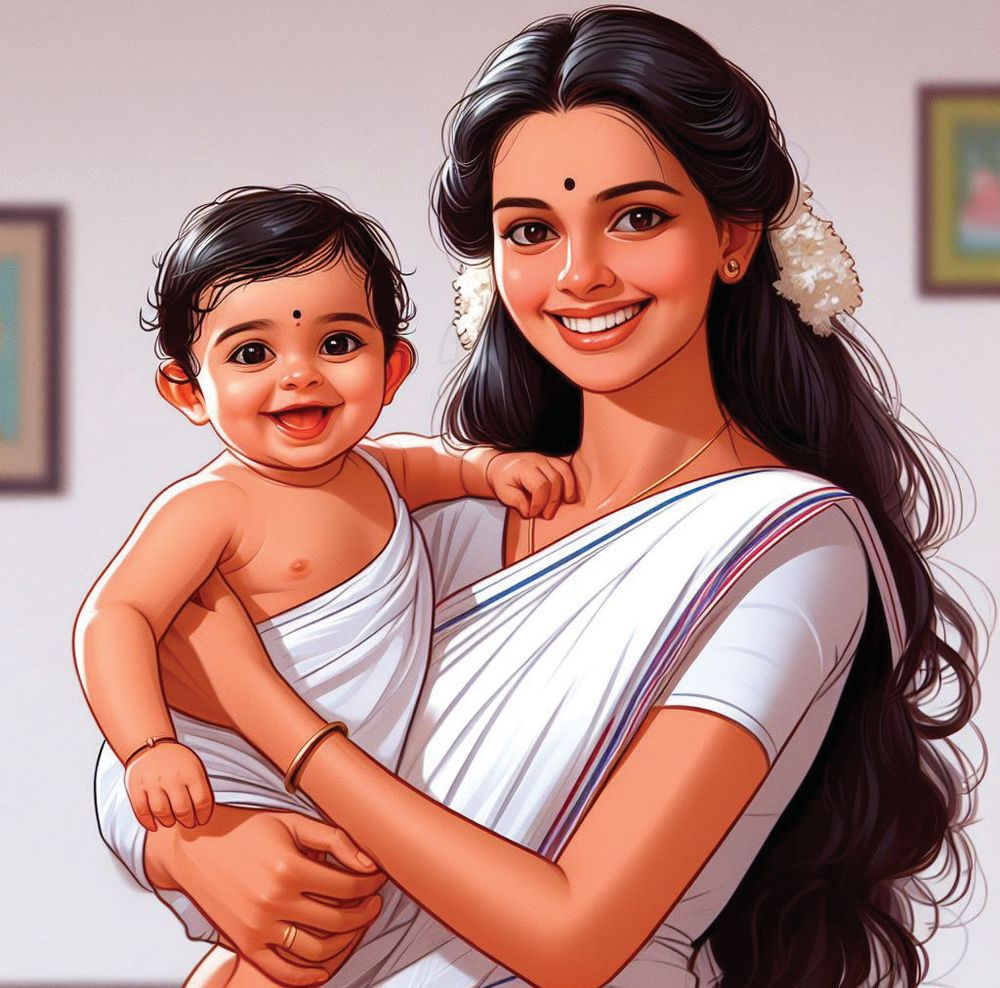
BIOLOGY - IX
Motherhood Uterus is the unique organ where the growth and development of the foetus takes place. The uterus is strong enough to hold an additional weight of 10-12 kg, with about two litres of amniotic fluid in which the foetus grows along with the placenta. During this period, the uterus expands 500-1000 times. It is the uterus that plays a main role in child birth, through strong contractions. What else is greater in this world than motherhood that involves child birth and lactation?
You have understood the importance of care and nutrition during pregnancy and parturition. How should the nutrition and care of a newborn baby be? Analyse the given poster and description and gain understanding.
What else is as valuable as breast milk? Colostrum, a light yellow coloured milk produced immediately after giving birth, must be compulsorily fed to the baby. This will give the baby lifelong immunity. Only breastfeed should be given, up to six months. There is no need to give porridge or other liquid food items to the baby. A baby should be breastfed for at least two years. Breast milk provides the nutrients needed for growth and cognitive development. Breast milk contains antibodies that protect the baby against infection, diarrhoea, respiratory diseases and allergies. Breast milk helps to maintain body temperature and to prevent dehydration. 129


BIOLOGY - IX
the What are f a o benefits ho mother w s? d breastfee . u Find o t
Like breast milk, vaccines are also a baby’s birth right. Vaccination or immunisation is the best way to acquire artificial immunity. It is the responsibility of the parents to protect their children’s right by administering vaccines at the right time.
You can approach the nearest government health centres for vaccination. All vaccines are given for free, for babies and pregnant women.
What are the main vaccines given to newborns? What is the time schedule for vaccination? Visit the nearest health centre, check the National Immunisation Schedule and complete table 5.2. Prepare a chart and display it in the class. Find out the disease which is prevented by each each vaccine.
National Immunisation Schedule At birth
BCG, OPV (zero dose), Hepatitis B
6 weeks
OPV-I, Pentavalent-I, IPV-I
10 weeks 14 weeks 9 months 16-24 months 5-6 years 10 years 16 years Table 5.2 : National Immunisation Schedule 130

How about conducting a study on creating awareness among the public in your area about antenatal and postnatal care and the intervention of health workers? Prepare a report after interviewing health workers and, the public by including the given topics. Antenatal care
Intervention of health workers
Diet, Treatment
Home birth
BIOLOGY - IX
Vaccines
Teenage Pregnancy Pregnancy between 10-19 years is commonly called teenage pregnancy. The adolescent body may not have the physical capacity to handle extreme stress such as child birth. There are chances of many complications during pregnancy and child birth in this period. It is dangerous for the health of the mother and the baby. As they are not mentally prepared to shoulder the responsibilities of motherhood, they may be affected by psychiatric issues like depression. Premature births, babies having low weight at birth, occurrence of various morbidities and high maternal and infant mortality rates are common in teenage pregnancy. Adolescent pregnancy with or without sexual exploitation often leads to unsafe termination of pregnancy.
of one’s age, gender or background. It is important to recognise that sexual assault is never the victim’s fault and that everyone has the right to feel protected and respected in all circumstances.
Understanding what sexual assault is and how it happens, is the first step to prevent it. Consenting to sexual activity and becoming a victim to sexual exploitation are both equally dangerous. If you are experiencing sexual violence or having concerns about your safety, you should seek the necessary support from the members of your family or from the legal system. The sexual assaults against those who are below 18 years come under POCSO Act in India. Counsellors at Adolescent Friendly Health Centres can be approached confidentially for real-time solutions to such problems and health concerns. Sexual assault is an act that violates Health Department's 24-hour Disha a person’s rights and dignity. helpline numbers (1056/104) can be Anyone can be a victim regardless accessed to avail their services.
131
BIOLOGY - IX
Variations in the birth rate Analysing the statements given below, discuss your opinions and form inferences. Frequent pregnancy may affect the health of the mother and children. Increase in population creates adverse effects in the environment and in the utilisation of resources. In some countries where the bith rate is lesser, extra time and financial assistance for child care are given. The countries in the world face issues of a high birth rate and a low birth rate. Contraceptive methods are important in controlling birth rate. Based on the indicators, analyse the excerpt from the doctor's article and illustration 5.7 and make a note.
Contraceptive Methods Contraceptives are methods or devices used to interrupt the process of conception. It plays a vital role in family planning. This gives an opportunity for the couple to decide when to give birth to children. A gap of 2 - 5 years between pregnancies can improve the mother’s health and it gives opportunity for the parents to provide adequate care for the first child. There are contraceptive methods available for both men and women.
132
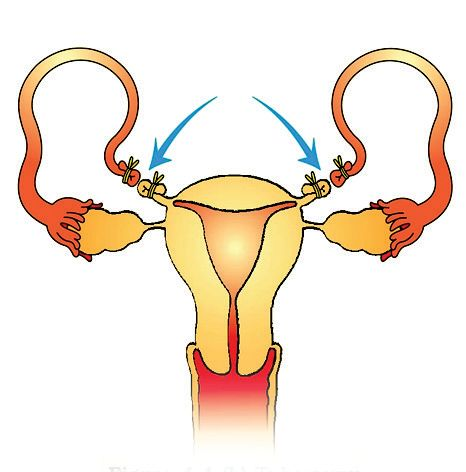
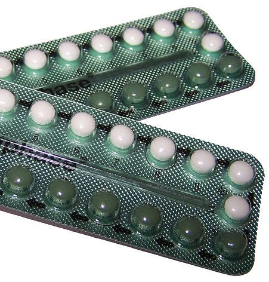
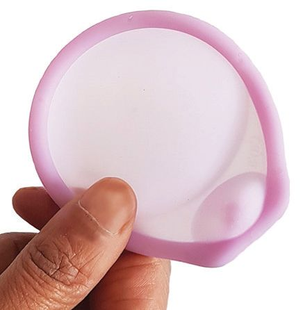
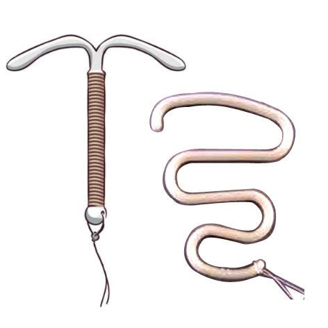
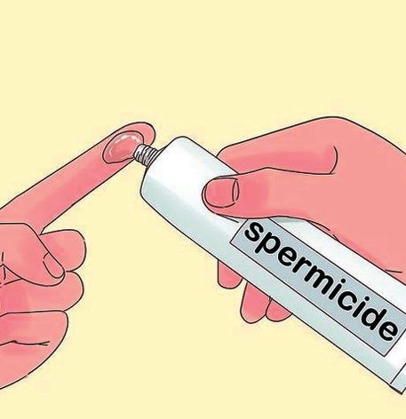
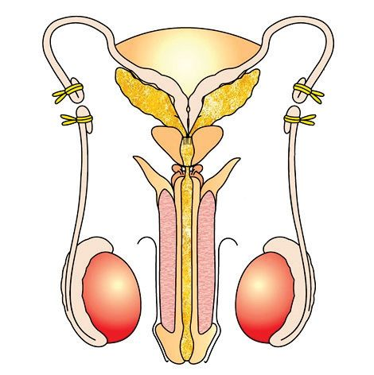
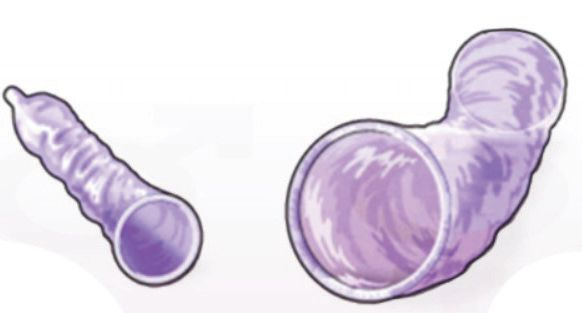
BIOLOGY - IX
Condoms
Oral contraceptive pills
(Prevent the deposit of sperms in the vagina)
(Interrupt ovulation)
Diaphragm
Vasectomy
(Prevents sperm from reaching the uterus)
(By cutting or tying the vas deferens, the passage of the sperm is blocked)
Spermicides
( Used to destroy sperms near the cervix in the uterus)
Intra Uterine Devices (Prevents implantation)
Tubectomy (By cutting or tying the oviduct, the passage of the ovum is blocked)
• Temporary contraceptive methods • Permanent contraceptive methods • Contraceptive methods in women • Contraceptive methods in men
Illustration 5.7 : Contraceptive methods 133
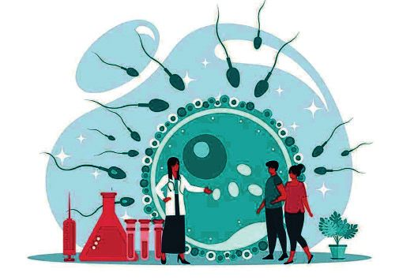
BIOLOGY - IX
Infertility
If a couple is unable to conceive naturally, even after one year from the time they decided to conceive can be considered as infertility. Based on the indicators, analyse the description given below and make a note. One or both the partners may have the physical conditions leading to infertility. Defects in sperm production, decrease in the number of sperms and their motility and certain diseases can cause male infertility.
Ovulation disorders, blockage in the fallopian tube and hormonal imbalances such as Polycystic Ovary Syndrome (PCOS) can cause infertility in women. Toxins, pollution, smoking, drug abuse, consumption alcohol, sexually transmitted infections and inflammation of the reproductive organs can reduce the chances of fertility in both. Hormone and semen tests in the laboratory, ultrasound scanning and genetic tests can diagnose the cause of infertility. Medicines and Assisted Reproductive Technologies (ART) such as In vitro Fertilization (IVF) can be beneficial for infertility treatment. • Male infertility • Female infertility • Treatment 134
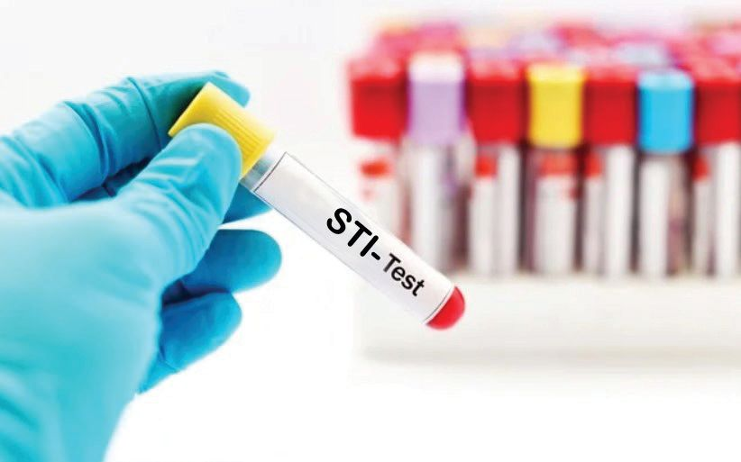
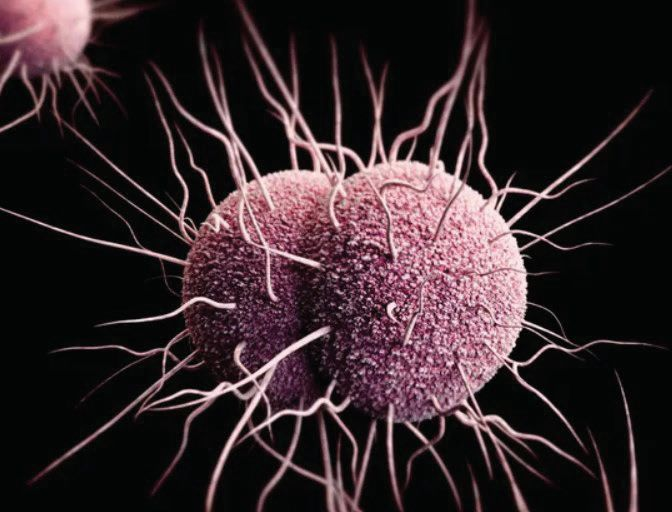
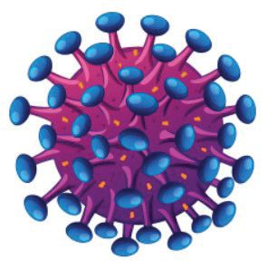
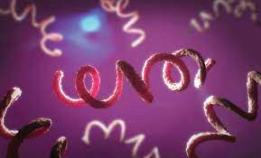
BIOLOGY - IX
Sexually Transmitted Infections / STIs
Sexually transmitted diseases are mainly transmitted through sexual contact. These diseases are caused by bacteria, virus, fungi or parasites. Most common STIs are AIDS, Chlamydiasis, Gonorrhea, Syphilis, Genital Herpes, Human Papilloma Virus (HPV) infection, Hepatitis B, Trichomoniasis and Candidiasis. Vaccinations against HPV and Hepatitis B infections are available. In addition, ensuring genital hygiene and seeking immediate medical attention if symptoms occur can help preventing long-term consequences and reducing transmission. Interview a doctor to clear your doubts about sexually transmitted diseases. Collect more information and prepare and display a poster on the pathogens causing the above diseases, their transmission and prevention.
HIV
Gonococci
Treponima pallidum
Certain pathogens causing STIs 135
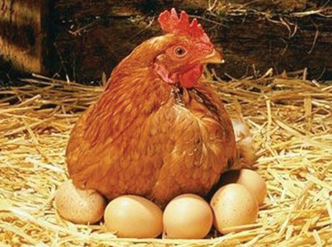
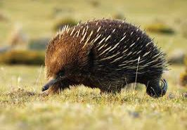
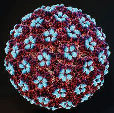
BIOLOGY - IX
HPV Infection and Cervical Cancer Human Papilloma Virus (HPV) infection is one among the most common sexually transmitted diseases. This is a type of virus that causes genital warts and various cancers including cervical cancer. The greatest challenge in preventing HPV is the absence of manifestation of symptoms in affected persons. Chronic infection with high-risk HPV types cause certain changes in the cells of the cervix. If left untreated, these changes can turn into cervical cancer. The risk of cervical cancer is higher in girls who have sex before the age of 18. The virus infection is severe among them. Pap smear test and HPV testing are helpful in early detection of infection. Since cervical cancer is the second most common disease among women in Kerala after breast cancer, vaccination has been started for girls in the higher secondary section to prevent this disease. There are vaccines that can be given up to 26 years in females and up to 21 years in males.
Evolution of the Reproductive Process Traces of evolution can be seen in reproduction also. The development from egg-laying organisms to mammals which give birth and lactate their young ones indicates the same. This is very obvious in the evolution of vertebrates.
136

Fish and amphibians reproduce through external fertilisation whereas in reptiles and birds, it is through internal fertilisation. Even then, the egg is hatched outside the body. The embryo is fully developed using the nutrients inside the egg. When it comes to mammals, the egg is limited to a cell (ovum) required for fertilisation. The foetus completes its growth by receiving nutrients from the mother’s body.
BIOLOGY - IX
With the process of reproduction too, nature continues to convince us that the history of living beings is that of evolution. By understanding the life process called reproduction, we should also be able to enjoy the continuity of life based on the ongoing process of evolution in nature.
Let us Assess 1. What is the duration of full term pregnancy in humans? a) 200-210 days
b) 210-220 days
c) 270-280 days
d) 280-290 days
2. Choose the one which is used to observe the growth of the foetus. a) ultrasound scan c) ECG
b) stethoscope d) thermometer
3. The fluid filled sac that surrounds and protects the foetus is ................ a) amnion
b) placenta
c) uterus
d) ovary
4. Implantation means (a) Deposition of sperms in the vagina (b) Blastocyst attaches to the endometrium and grows (c) The fusion of sperm and the ovum (d) Surgical removal of the baby 137
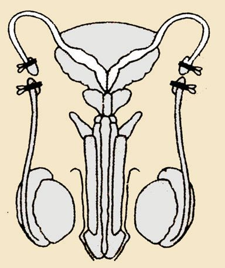

BIOLOGY - IX
5. The illustration given below shows a surgical procedure that men can adopt for contraception.
(a) Identify the contraceptive method in males. (b) How is contraception possible through this surgery? 6. Which of the following organisms reproduce by external fertilisation? a) Amphibians c) Birds
b) Reptiles d) Mammals
7. “First breast milk, First defence”. These are the words in the poster released by the Department of Women and Child Development, Government of Kerala. What is your response to the phrases in the poster? 8. What are the factors that reduce fertility in both men and women? 9. Describe the physical changes of the foetus during each trimester of pregnancy. 10. What are the chief ways to avoid Sexually Transmitted Infections (STIs)?
Extended activities 1. Prepare a poster on adolescent health and food habits and display in the class. 2. Prepare the list of vaccines to be administered to newborns with the help of imaging software and post them in the social media. 3. Prepare a manuscript on the importance of motherhood by including pictures and descriptions. 138